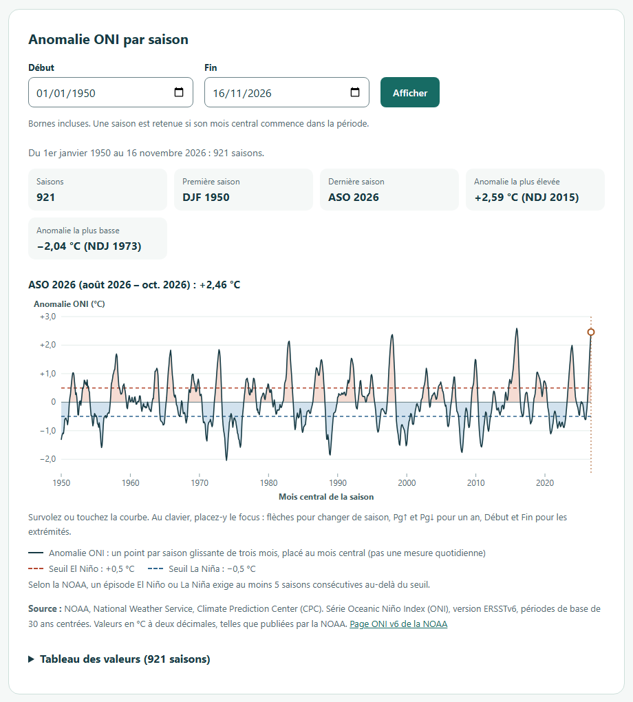

Dossier de conception d’une plateforme d’analyse d’El Niño et de La Niña à partir de l’indice NOAA ONI (version ERSSTv6)
Hugodrc55/ENSO-Monitor, branche mainoni.ascii.txt extrait le 9 novembre 2026 (921 saisons, DJF 1950 → ASO 2026)Vérifié commande ou démonstration réellement exécutée, avec sa date.
Proposé conçu mais ni réalisé ni testé. Les valeurs ONI citées viennent du fichier
NOAA extrait le 9 novembre 2026 ; les tests automatisés utilisent des valeurs fictives, déclarées comme telles.
Les décisions sont numérotées D01 à D31 dans docs/DECISIONS.md.
Objectif. Permettre d’explorer une série scientifique réelle sur ENSO (El Niño – oscillation australe) : afficher l’anomalie de température de surface de la mer du Pacifique équatorial central depuis 1950, choisir une période, lire chaque valeur avec son unité et sa source, et comparer deux épisodes historiques avec une interprétation prudente.
| Fonctionnalité | Réalisation | État |
|---|---|---|
| Importer une série NOAA dans PostgreSQL, identifier la source, contrôler les doublons | etl/transform_oni.py puis backend/app/import_oni.py ; provenance par import ; doublons contrôlés à trois niveaux | Vérifié le 16 nov. 921 saisons, second import : 0 ajout |
| Exposer les observations par une API documentée, filtrée et validée | GET /api/v1/observations?start=…&end=…, OpenAPI sur /docs | Vérifié le 16 nov. 200, 422 |
| Visualiser les valeurs : courbe interactive et filtre de période | Interface React : filtre, résumé, courbe SVG, tableau des valeurs | Vérifié le 16 nov. Chrome, données réelles |
| Comparer deux épisodes avec une interprétation prudente | El Niño 1997-1998 et La Niña 1988-1989, valeurs calculées depuis l’API, limites écrites | Vérifié le 16 nov. |
Choix déterminant : l’indice ONI ERSSTv6 (D02, D10, D13).
Besoin : une série NOAA authentique, documentée, couvrant de nombreux épisodes. Choix :
l’ONI, choisi par l’étudiant, fichier oni.ascii.txt dont la version ERSSTv6 a été vérifiée (921 valeurs sur 921
conformes au tableau NOAA v6, 495 écarts avec le v5). Limite : depuis le 1er février 2026, la NOAA utilise la
RONI pour la surveillance officielle ; l’ONI reste publié et mis à jour, et l’interface affiche toujours le nom exact de la série.
| ID | User story | Priorité | État au 16 nov. |
|---|---|---|---|
| US1 | En tant que visiteur, je veux voir l’ONI depuis 1950 sur une courbe, avec son unité et sa source, afin de repérer les périodes chaudes et froides. | Must | Réalisé |
| US2 | En tant que visiteur, je veux choisir une date de début et de fin afin d’examiner un épisode précis. | Must | Réalisé |
| US3 | En tant que visiteur sans souris, je veux lire la valeur de chaque saison au clavier ou dans un tableau. | Must | Réalisé |
| US4 | En tant que visiteur, je veux comparer un épisode El Niño et un épisode La Niña avec des valeurs chiffrées et leurs limites. | Must | Réalisé |
| US5 | En tant que visiteur, je veux un message clair si la période est invalide ou vide, ou si le service ne répond pas. | Must | Réalisé |
| US6 | En tant que mainteneur, je veux réimporter un fichier NOAA sans créer de doublon ni écraser une valeur en silence. | Must | Réalisé (ligne de commande) |
| US7 | En tant que visiteur, je veux connaître la date d’extraction des données affichées. | Should | Partiel en base, pas affichée |
| US8 | En tant que visiteur, je veux partager un lien vers une période. | Could | Non réalisé |
| US | Critère (étant donné / quand / alors) | Preuve |
|---|---|---|
| US2 | La série chargée, quand je choisis du 01/07/2015 au 01/03/2016 et clique « Afficher », alors 9 saisons de JJA 2015 à FMA 2016 apparaissent dans le résumé, la courbe et le tableau. | Démonstration réelle ; test App.test.tsx (valeurs fictives) |
| US5 | Quand la date de début suit la date de fin, alors un message s’affiche, aucune requête n’est envoyée et la courbe précédente reste visible. | Test et démonstration |
| US5 | Quand la période ne contient aucune saison (1940-1949), alors « Aucune saison ONI… » s’affiche, sans courbe. | Test et démonstration |
| US5 | Quand l’API ou la base est arrêtée, alors un message distinct s’affiche (502 ou 503) avec « Réessayer ». | Test (réseau), démonstration (502, 503) |
| US3 | Le focus sur la courbe, Début puis 5 fois → sélectionne la 6e saison et l’annonce (aria-valuetext). | Test et démonstration |
| US4 | La comparaison affiche, pour chaque fenêtre, le nombre de saisons, les extrêmes en °C et la plus longue suite au-delà du seuil, calculés depuis l’API. | Test et démonstration |
| US6 | Un second import du même fichier n’ajoute rien ; une valeur différente pour une saison déjà en base refuse tout l’import. | 8 tests d’import ; démonstration |
Parcours principal. (1) À l’ouverture, la page charge toute la série : 921 saisons, résumé, courbe et source. (2) Le visiteur saisit une période puis « Afficher » : une seule requête part, l’ancienne est annulée. (3) Il lit les valeurs à la souris, au doigt ou au clavier, ou déplie le tableau. (4) Il descend vers la comparaison : tableau côte à côte, observation construite à partir des valeurs, puis limites. Parcours d’erreur. Dates vides ou inversées : message sous le formulaire, sans requête. Service indisponible : message et bouton « Réessayer ».

Annotations
role="status") : chargement, période et nombre de saisons, période vide, erreur.Sur mobile, les champs passent l’un sous l’autre et le résumé sur deux colonnes ; à 390 px, aucun défilement horizontal (mesuré le 15 novembre).
Lecture. Les quatre cas du visiteur correspondent aux user stories US1 à US5 ; trois d’entre eux incluent le même
chargement des observations d’une période, c’est-à-dire l’appel à GET /api/v1/observations. Le mainteneur
transforme puis importe le fichier NOAA ; l’import inclut toujours le contrôle de la provenance et des doublons. Comme il
n’existe aucune administration en ligne, aucun contrôle d’accès n’est nécessaire : l’API est en lecture seule.
backend/app/models.py et la migration Alembic 86057118b37f. Les identifiants techniques (id, clés étrangères) sont omis.| Association | Justification de la cardinalité |
|---|---|
| Source 1 — 0..* Indice | Un producteur publie plusieurs séries (ONI, RONI…) ; une seule est importée aujourd’hui, le modèle n’en dépend pas. |
| Indice 1 — 0..* Import | Chaque extraction datée est un nouvel import ; un indice existe avant son premier import. Même empreinte SHA-256 → import réutilisé, jamais dupliqué. |
| Import 1 — 0..* Observation | Une observation garde l’import qui l’a chargée la première fois. Un nouveau fichier peut n’apporter aucune saison nouvelle : 0 observation. |
| Indice 1 — 0..* Observation | Redondant avec l’import, mais indispensable à l’unicité « une valeur par indice, année et saison », quel que soit l’import (D22). |
frontend/src/components/PeriodFilter.tsx, useObservations.ts, api.ts, backend/app/observations.py.Commentaire. Le contrôle a lieu deux fois, et volontairement : dans le navigateur pour éviter une requête inutile et donner un message immédiat, dans l’API parce qu’un client quelconque peut l’appeler (422 pour une date invalide ou un début après la fin). Pendant le chargement, rien n’est affiché de l’ancienne période : l’état « chargement » est déduit d’une clé (période et tentative), et une réponse arrivée pour une ancienne clé est ignorée. Côté serveur, une base arrêtée donne une réponse 503 en 5 s au lieu d’une attente d’environ deux minutes sous Windows (D25).
Cas non représentés. Si l’API elle-même est arrêtée, le proxy Vite répond 502 et l’interface affiche « L’API est injoignable ou en erreur ». Sans aucune réponse en 10 s, la requête est abandonnée avec un message dédié. Si la série n’a jamais été importée, l’API répond 404. Ces cas sont couverts par les tests de l’API (404, 503) et du frontend (erreur réseau).
Choix : deux contrôles des dates et une clé par requête (D25, D28). Besoin : ne jamais afficher une période qui n’est pas celle demandée. Choix : validation au clic, requête annulable, état dérivé d’une clé. Limite : pas de cache ; revenir à une période déjà vue relance une requête.
| Composant | Fichiers | Responsabilité |
|---|---|---|
| ETL | etl/transform_oni.py, environnement etl/.venv | Vérifie le SHA-256, lit le fichier en texte et contrôle l’en-tête, valide chaque ligne, traite les doublons, date chaque saison par son mois central, écrit un CSV identique d’une exécution à l’autre. Ne touche pas à la base. |
| Import | backend/app/import_oni.py | Lit la fiche de provenance (Pydantic), recontrôle l’empreinte et les décimales, compare chaque saison à la base, puis écrit tout en une transaction ou rien. |
| Base | backend/app/models.py, backend/alembic/ | Schéma, contraintes et migration versionnée. Une seule variable DATABASE_URL pour SQLAlchemy et Alembic. |
| API | backend/app/main.py, observations.py, database.py | Routes /api/v1, validation, codes 200, 404, 422 et 503, documentation OpenAPI sur /docs. Une session SQLAlchemy par requête. |
| Frontend | frontend/src/api.ts, useObservations.ts, components/ | Appel HTTP et contrôle du JSON, chargement par période, rendu du filtre, de la courbe, du tableau et de la comparaison. |
Migration unique 86057118b37f : alembic check ne détecte aucun écart entre modèles et migration ;
le test test_downgrade_then_upgrade vérifie que la migration se défait et se rejoue. L’index sert exactement la requête
de la route : une série, entre deux dates, triée par date.
Chaque nombre de l’interface peut être relié au fichier d’origine. Exemple vérifié en SQL le 14 novembre 2026 :
Interface : « NDJ 2015 (nov. 2015 – janv. 2016) : +2,59 °C »
← observation : season = NDJ, year = 2015, anom_c = 2.59, source_line = 793
← data_import : noaa-cpc_oni-ersstv6_2026-11-09.txt, sha256 118c5633…0f7f,
downloaded_at 2026-11-09 13:42:35+00 (en-tête Date du serveur NOAA)
← climate_index : ONI_ERSSTv6, « ERSSTv6, périodes de base de 30 ans centrées », °C
← source : NOAA_CPC
→ fichier brut data/raw/…2026-11-09.txt, ligne 793 : « NDJ 2015 29.15 2.59 »
SHA256SUMS.Last-Modified NOAA et preuve de version, validées par Pydantic (champ inconnu ou date sans fuseau refusés).ANOM n’est jamais recalculé, car la période de référence de l’ONI change tous les 5 ans.| Décision | Besoin | Choix retenu | Limite concrète |
|---|---|---|---|
| PostgreSQL (D19, D22) | Garantir l’intégrité même si un autre programme écrit dans la base. | Contraintes CHECK, UNIQUE, clé composite, NUMERIC(4,2) exact. Écarté : SQLite, plus permissif sur les types. | Docker est nécessaire en local, y compris pour les tests du backend. |
| ETL séparé (D15) | Isoler pandas, lourd, de l’API. | Dossier etl/ avec son environnement, CSV intermédiaire relisible. | Deux environnements Python ; l’import fait confiance au CSV qu’on lui donne. |
| Import dans le backend (D24) | Réutiliser les modèles ; jamais d’écrasement silencieux. | Conflit affiché, import entier refusé, aucun écrit. | Un fichier NOAA révisé sera refusé tant qu’une règle de révision n’existe pas. |
| API versionnée (D25) | Un contrat stable pour le frontend. | Préfixe /api/v1, paramètres obligatoires, bornes incluses, série et unité dans la réponse. | Une seule série servie ; pas de pagination (921 lignes au plus). |
| URL relative et proxy (D05) | Pas de CORS à ouvrir. | Le navigateur appelle /api sur son origine ; Vite, puis Caddy en cible, transmettent à l’API. | En production, le reverse proxy devient indispensable. |
| Courbe SVG sans bibliothèque (D27) | Courbe accessible au clavier, testable sans navigateur. | SVG écrit dans OniChart.tsx, curseur ARIA, tableau équivalent. | Pas de zoom ; graduations simples ; plus de code à maintenir. |
Pourquoi la base est reconstructible. Le fichier brut et sa fiche de provenance sont versionnés dans Git : migration, transformation et import recréent les 921 observations à l’identique. Vérifié le 16 novembre 2026 sur une base vide créée pour l’occasion : 921 observations, puis 0 ajout au second import, 1 seul import enregistré. La sauvegarde (§ 7) protège donc surtout l’historique des imports, pas des données irremplaçables.
| ID | Élément | Priorité | État au 16 nov. 2026 |
|---|---|---|---|
| B1 | Étudier la source NOAA : format, unité, saisons, version, limites | Must | Fait le 9 nov. |
| B2 | Transformation pandas/NumPy et test de données | Must | Fait le 12 nov. (28 tests) |
| B3 | Schéma PostgreSQL, contraintes, migration | Must | Fait le 14 nov. (15 tests) |
| B4 | Import avec provenance et contrôle des doublons | Must | Fait le 14 nov. (8 tests) |
| B5 | API filtrée par période et test | Must | Fait le 14 nov. (10 tests) |
| B6 | Interface : filtre, courbe, tableau, états | Must | Fait le 15 nov. |
| B7 | Comparaison de deux épisodes | Must | Fait le 15 nov. |
| B8 | Test frontend du changement de période | Must | Fait le 15 nov. (12 tests) |
| B9 | Dossier de conception | Must | Rédigé le 16 nov. ; retour d’expérience à compléter |
| B10 | Déploiement documenté (VPS, Compose, Caddy) | Must | Proposé (§ 7), non déployé |
| B11 | Afficher la date d’extraction dans l’interface | Should | À faire : l’API ne la renvoie pas |
| B12 | Règle d’acceptation des révisions NOAA | Should | À décider |
| B13 | Test de bout en bout (Playwright, vraie API) | Could | Non prévu avant la remise |
| B14 | Période dans l’URL, lien partageable | Could | Non prévu |
| B15 | RONI, ERA5, administration, export, détection d’épisodes | Won’t | Hors MVP, par choix |
Projection du périmètre de l’épreuve sur cinq journées. Ce tableau ne décrit pas le calendrier réel du projet, donné en 5.3 ; la dernière colonne indique seulement où chaque journée a été réellement traitée.
| Journée | Priorités | Vérification de sortie | Travail réel correspondant |
|---|---|---|---|
| Journée 1 | Besoin, backlog, source NOAA, parcours, maquettes, conception initiale | Périmètre réduit, source identifiée, critères d’acceptation | 4 et 9 novembre |
| Journée 2 | Modèle de données, migrations, transformation, import | Provenance et test de données | 12 et 14 novembre |
| Journée 3 | API, filtres, validation, intégration React | Test API : période valide et entrée invalide | 14 et 15 novembre |
| Journée 4 | Courbe, sélection de période, comparaison, accessibilité | Test frontend, contrôle des interprétations | 15 novembre |
| Journée 5 | Intégration, corrections, dossier, déploiement proposé, répétition de la code review | Trois tests documentés, dossier ≤ 15 pages, explications personnelles | 16 novembre ; répétition orale à faire |
| Date | Travail réalisé (d’après le journal et l’historique Git) | Assistance IA |
|---|---|---|
| 4 nov. | Lecture du sujet, dépôt Git, page React, route de santé et son test | Codex |
| 8 nov. | Commits du travail du 4 novembre, préparation de la publication (premier push refusé faute d’autorisation explicite) | Codex |
| 9 nov. | Étude des sources NOAA, téléchargement et contrôle du fichier, provenance | Claude |
| 10 nov. | Premier push sur GitHub, après accord de l’étudiant | — |
| 12 nov. | Transformation et 28 tests | Claude |
| 14 nov. | PostgreSQL, modèles, migration et 15 tests ; import, API et 18 tests | Claude |
| 15 nov. | Interface, comparaison et 12 tests Vitest | Claude |
| 16 nov. | Revérification complète sur les vraies données, dossier de conception | Claude |
Le projet a avancé par étapes validées, chacune lancée par un cahier des charges de l’étudiant et close par des commits
conventionnels (feat:, test:, docs:…) datés du jour réel, sans réécriture d’historique (D01).
docs/GIT.md).docs/PLAN.md (plan et risques), docs/DECISIONS.md (D01 à D31), docs/JOURNAL.md (travail réel, erreurs, vérifications, contributions de l’IA).| Risque | Réponse apportée |
|---|---|
| Confondre ONI et RONI, ou deux versions ERSST | Version vérifiée sur les 921 valeurs ; nom exact « ONI ERSSTv6 » partout ; aucune donnée RONI importée (D13). |
| Mal dater DJF et NDJ, à cheval sur deux années | Hypothèse vérifiée sur le fichier mensuel NOAA (919 saisons sur 921) ; contrainte SQL sur la date de référence (D12). |
| Décalage silencieux des colonnes par pandas | Lecture en texte, en-tête contrôlé, test dédié (D16). |
| Révision NOAA d’une valeur déjà importée | Conflit affiché, import refusé ; règle d’acceptation encore à écrire (D24). |
| Requête bloquée quand la base est arrêtée | Délai de connexion de 5 s, réponse 503, test automatisé (D25). |
| Dispersion dans des extensions | MVP seul ; RONI, carte, administration et export explicitement écartés. |
| Code produit par l’IA mais non compris | Explication de chaque étape, journal des contributions, fichiers clés désignés pour l’oral ; compréhension à confirmer par l’étudiant. |
| Dépasser 15 pages | Une section par page prévue dans le sommaire, nombre de pages contrôlé à chaque export. |
| Arbitrage | Retenu | Écarté, et pourquoi |
|---|---|---|
| Bibliothèque de graphiques | SVG écrit à la main (D27) | Chart.js : canvas invisible aux tests DOM et aux lecteurs d’écran |
| Test frontend | Vitest, jsdom, Testing Library, API simulée (D30) | Playwright : plus lent, exige l’API et la base ; gardé en piste |
| Fenêtres de comparaison | 12 saisons, de mai à avril (D29) | El Niño 2015-2016 : 20 saisons, ne tient pas dans la même durée |
| Valeurs révisées | Refus explicite de l’import | Écrasement : perte silencieuse de la valeur précédente |
| Page de santé | Retirée de l’interface, route conservée (D28) | Double requête ; l’erreur de chargement distingue déjà 502 et 503 |
| Test exigé par le sujet | Fichier | Commande, depuis la racine du dépôt | Résultat |
|---|---|---|---|
| Transformation des données | etl/tests/test_transform_oni.py | .\etl\.venv\Scripts\python.exe -m pytest etl/tests -q | 28 passed (4,2 s) |
| API filtrée : période valide et entrée invalide | backend/tests/test_observations_api.py | depuis backend : .\.venv\Scripts\python.exe -m pytest tests/test_observations_api.py | 10 passed (3,2 s) |
| Frontend : changement de période | frontend/src/App.test.tsx | npm.cmd --prefix frontend test | 12 passed (5,8 s) |
| Backend complet : santé, schéma, import, route | backend/tests/ | depuis backend : .\.venv\Scripts\python.exe -m pytest -q -W error | 34 passed (4,8 s) |
enso_monitor_test), une transaction annulée par test (D26). Le test frontend saisit une nouvelle période, puis vérifie le résumé, la valeur lue sur la courbe au clavier et les lignes du tableau.role="slider" (flèches, Pg↑, Pg↓, Début, Fin) avec aria-valuetext ; tableau dans un <details> ; contour de focus de 3 px. Vérifié dans Chrome le 15 novembre.date de Pydantic et comparaison) : réponse 422 avec un message en français.api.ts, car TypeScript ne vérifie rien à l’exécution.UNIQUE (climate_index_id, year, season) dans la base (D22).| Point | Mesure en place |
|---|---|
| Injection SQL | Requêtes construites par l’ORM SQLAlchemy, paramètres liés ; aucune concaténation de texte utilisateur dans du SQL. |
| Secrets | Mot de passe dans .env, exclu de Git ; .env.example sans vrai secret. Le PDF du sujet est aussi exclu du dépôt public. |
| Surface exposée | API en lecture seule (deux routes GET), sans compte ni administration ; PostgreSQL écoute sur 127.0.0.1 seulement ; aucune règle CORS ouverte. |
| Messages d’erreur | 503 générique « Base de données indisponible. », sans trace ni détail de connexion. |
| Dépendances | Versions fixées (package-lock.json, requirements*.txt). npm audit --omit=dev : 0 vulnérabilité le 16 novembre. 9 alertes modérées (minimatch) dans la chaîne ESLint, outil de développement absent de la page livrée. |
921 lignes au plus par réponse, servies par l’index (climate_index_id, reference_month) ; aucune pagination nécessaire.
Page livrée : 237,93 kB de JavaScript (75,28 kB compressés) et 4,79 kB de CSS (build du 16 novembre). Délais maîtrisés :
5 s pour la connexion à la base, 10 s pour une requête du navigateur.
| Anomalie | Correction | Non-régression |
|---|---|---|
| pandas décale les colonnes sans erreur si une ligne a un champ de trop | Lecture en texte et contrôle d’en-tête (D16) | Test de la transformation |
| Base arrêtée : requête sans réponse pendant plus de 60 s sous Windows | connect_timeout de 5 s, réponse 503 | test_unavailable_database_returns_503 (2 s) |
| Clé React inutile révélée par une erreur volontaire non détectée | Clé supprimée, comportement expliqué en commentaire | 12 tests frontend |
Fonction countWhere jamais utilisée | Supprimée | Typage et lint |
enso_monitor_test ; sans TEST_DATABASE_URL, ils sont ignorés.Choix : tester sur un vrai PostgreSQL plutôt que sur SQLite (D26). Besoin : éprouver les contraintes
réelles (CHECK, NUMERIC, make_date). Choix : base jetable migrée une fois,
une transaction annulée par test. Limite : la suite backend ne tourne pas sans Docker.
Rien n’a été mis en ligne. Ce chapitre décrit une cible et distingue ce qui a été testé en local de ce qui est seulement proposé.
| Testé en local | Proposé, non testé |
|---|---|
PostgreSQL 18.7 dans Docker Compose (compose.yaml), port lié à 127.0.0.1, volume nommé, contrôle de santé | Fichier compose.prod.yaml avec Caddy, API, base et ETL |
| Migration, transformation et import depuis une base vide (16 nov.) | Images Docker de l’API et de l’ETL (Dockerfiles à écrire) |
API Uvicorn et frontend Vite, proxy /api ; build de production (npm run build) ; npm audit --omit=dev : 0 vulnérabilité (16 nov.) | Caddy : HTTPS, fichiers statiques, reverse proxy |
Sauvegarde pg_dump puis restauration dans une base jetable : 921 observations, NDJ 2015 = 2.59, migration 86057118b37f (16 nov.) | VPS, pare-feu, sauvegardes planifiées, supervision |
VPS Linux (Debian ou Ubuntu LTS) chez un hébergeur européen, par exemple Hetzner comme le suggère le sujet, sans achat. Estimation : 2 vCPU, 4 Go de RAM, 40 Go de SSD. La base est minuscule (921 lignes ; une sauvegarde complète pèse 43 812 octets), l’API ne fait que des lectures indexées, et Caddy sert des fichiers statiques. La marge sert surtout au build du frontend avec Node, qui peut aussi être fait sur un poste de développement, et à conserver les sauvegardes.
.env créé sur le serveur, droits 600, jamais dans Git ; DATABASE_URL y désigne l’hôte db et non 127.0.0.1.PasswordAuthentication no), pas de connexion directe en root ; port 22 limité aux adresses d’administration si possible.ufw) : 22, 80 et 443 entrants seulement ; mises à jour de sécurité automatiques du système.Fichiers compose.prod.yaml et deploy/Caddyfile : extraits en 7.5.
# 1. VPS créé, enregistrement DNS A vers son adresse, Docker Engine et le plugin Compose installés git clone https://github.com/Hugodrc55/ENSO-Monitor.git /srv/enso && cd /srv/enso nano .env # mots de passe, DATABASE_URL vers db:5432 ; chmod 600 .env (cd frontend && npm ci && npm run build) # ou build sur un poste, puis copie de frontend/dist docker compose -f compose.prod.yaml up -d db docker compose -f compose.prod.yaml run --rm api alembic -c alembic.ini upgrade head docker compose -f compose.prod.yaml run --rm etl # produit data/processed/oni_clean.csv docker compose -f compose.prod.yaml run --rm api python -m app.import_oni \ --csv /data/processed/oni_clean.csv --provenance /data/raw/noaa-cpc_oni-ersstv6_2026-11-09.provenance.json docker compose -f compose.prod.yaml up -d curl -fsS https://enso.example.org/api/v1/health curl -fsS "https://enso.example.org/api/v1/observations?start=2015-12-01&end=2015-12-01"
# compose.prod.yaml (extrait)
services:
caddy:
image: caddy:2-alpine # version à figer
ports: ["80:80", "443:443"] # seuls ports publiés
volumes:
- ./deploy/Caddyfile:/etc/caddy/Caddyfile:ro
- ./frontend/dist:/srv/frontend:ro
- caddy-data:/data
- caddy-config:/config
networks: [edge]
api:
build: ./backend # Dockerfile à écrire
command: uvicorn app.main:app --host 0.0.0.0 --port 8000
env_file: .env # DATABASE_URL vers db:5432
volumes: ["./data:/data:ro"]
networks: [edge, internal]
depends_on: { db: { condition: service_healthy } }
db:
image: postgres:18.7-alpine
env_file: .env
volumes: [postgres-data:/var/lib/postgresql]
networks: [internal]
healthcheck:
test: ["CMD-SHELL", "pg_isready -U $${POSTGRES_USER}"]
etl:
build: ./etl
profiles: [tools]
network_mode: none # aucun réseau nécessaire
volumes: ["./data:/app/data"]
networks: { edge: {}, internal: { internal: true } }
volumes: { postgres-data: {}, caddy-data: {}, caddy-config: {} }
# caddy, api et db : restart: unless-stopped
# deploy/Caddyfile (extrait)
enso.example.org { # domaine à remplacer
encode zstd gzip
handle /api/* {
reverse_proxy api:8000
}
handle {
root * /srv/frontend
try_files {path} /index.html
file_server
}
header {
Strict-Transport-Security "max-age=31536000"
X-Content-Type-Options "nosniff"
-Server
}
}
Rôle de Caddy. Seul point d’entrée : il obtient et renouvelle seul le certificat HTTPS
du domaine (DNS vers le VPS, ports 80 et 443 ouverts), redirige HTTP vers HTTPS, sert la page React compilée et transmet
/api/* à l’API. L’URL reste relative : aucune règle CORS, comme avec le proxy Vite en local.
# Sauvegarde quotidienne (cron), 7 copies gardées, puis copie hors du serveur docker compose -f compose.prod.yaml exec -T db pg_dump -U enso -Fc enso_monitor \ > /srv/enso/backups/enso_$(date +%F).dump find /srv/enso/backups -name 'enso_*.dump' -mtime +7 -delete # Restauration docker compose -f compose.prod.yaml exec -T db pg_restore -U enso -d enso_monitor --clean --if-exists \ < /srv/enso/backups/enso_AAAA-MM-JJ.dump
pg_dump -Fc puis pg_restore dans une base jetable, dans le conteneur (sous PowerShell 5.1, la redirection > réencode les octets ; sous Linux, elle est sûre).git checkout de la version voulue, build du frontend et de l’image de l’API, alembic upgrade head, up -d, puis les deux curl de contrôle.
Retour arrière : version précédente puis up -d ; si le schéma a changé, alembic downgrade ou restauration de la sauvegarde prise juste avant.docker compose logs avec rotation (pilote json-file), journal d’accès de Caddy. Panne de la base : l’API répond 503 en 5 s et la page l’affiche ; restart: unless-stopped relance les services./api/v1/health et sur une requête d’observations : la route de santé répond 200 même base arrêtée, seule la seconde détecte une panne de la base. Alertes sur l’espace disque et l’expiration du certificat.Choix : Docker Compose sur un seul VPS (D19, D08). Besoin : reproduire en production la pile déjà utilisée en local, sans coût imposé. Choix : un fichier Compose, deux réseaux, un seul port public via Caddy. Limite : pas de haute disponibilité ; acceptable pour un outil de consultation dont la base est reconstructible.
ONI ERSSTv6 vérifié, sans mélange avec la RONI (D02, D10, D13) · fichier brut versionné et daté (D11) · saison datée par son mois central (D12) · ETL séparé (D15) · intégrité garantie par la base (D22) · aucun écrasement silencieux (D24) · contrat d’API versionné et validé (D25) · courbe SVG accessible (D27) · fenêtres de comparaison égales et non officielles (D29) · tests sur vrai PostgreSQL et parcours frontend testé (D26, D30).
Décalage silencieux des colonnes par pandas (corrigé, testé) ; mention « ERSSTv5 » sur la page ONI v6, signalée sans interprétation ; requête bloquée plus de 60 s quand la base est arrêtée sous Windows (délai de 5 s) ; erreur volontaire non détectée qui a révélé du code inutile ; outils sous Windows (encodage cp1252 de la console, chemins avec espaces, largeur minimale de Chrome sans interface, qui faussait une première capture mobile).
| Qui | Contribution |
|---|---|
| Codex (4 et 8 nov.) | Lecture et synthèse du sujet ; organisation du dépôt ; code initial (page React, route de santé et son test) ; configuration ; documentation ; commits du 8 novembre. |
| Claude Code (9 au 16 nov.) | Lecture des sources NOAA, téléchargement et contrôles du fichier ; transformation et tests ; schéma, migration, import, API et tests ; interface, comparaison et tests ; démonstrations et vérifications ; rédaction de ce dossier et de ses schémas. |
| Étudiant | Choix de l’ONI (D02) ; cahier des charges de chaque étape ; validation des étapes et autorisation de chaque publication. |
Données, fichier extrait le 9 novembre 2026 à 13:42:35 UTC (Last-Modified NOAA du 3 novembre 2026,
SHA-256 118c563331335c8649cdc2677e6be7ae89d1259d901345fcddbc2857af280f7f), pages consultées le 9 novembre 2026 :
detrend.nino34.ascii.txt)Références du sujet : France compétences, RNCP 36146 ; documentation Caddy (caddyserver.com/docs) et
Docker Compose (docs.docker.com/compose). Documentation technique consultée : guide Vite et premiers pas FastAPI.
Détail des sources et des contrôles : docs/DONNEES_NOAA.md ; preuves datées : docs/JOURNAL.md.